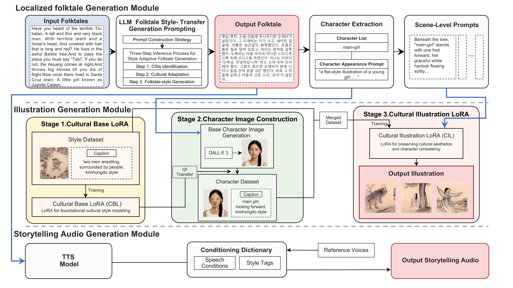
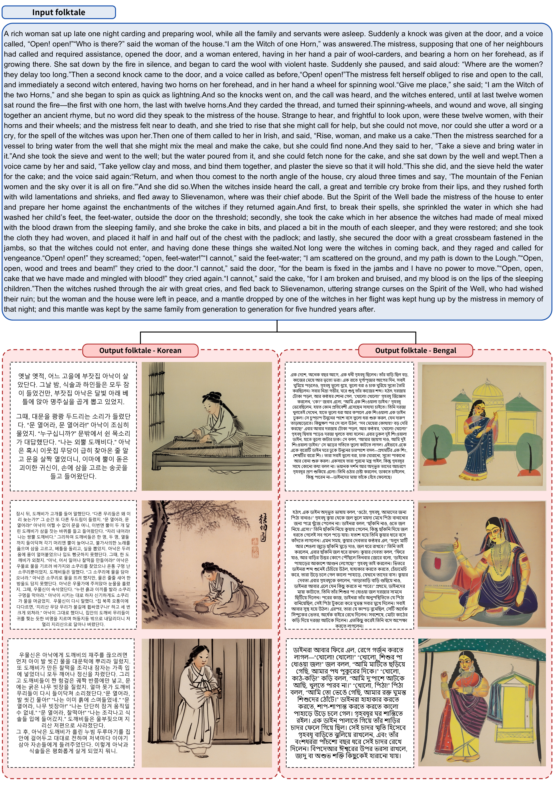

Video
Video
Abstract
Generating culturally coherent multimodal folktales presents unique challenges, particularly for underrepresented cultures facing data scarcity and cultural bias. Existing approaches predominantly rely on Western-centric corpora, limit outputs to text–image modalities, and reduce culture to a superficial stylistic layer rather than a core narrative structure.
we propose "MELT" (Multimodal Engine for Localized Tales), a unified framework for culturally adaptive story generation across text, illustration, and audio. To achieve this, MELT embeds cultural context as a foundational generative constraint and integrates three modules: (1) a Localized folktale generation leveraging structured prompting and contextual reasoning to preserve the narrative flow and cultural identity of traditional folktales; (2) an Illustration generation that ensures cultural style and character consistency using a Tri-Stage LoRA(Low-Rank Adaptation) pipeline; (3) a Storytelling audio component tailored to cultural prosody and oral storytelling conventions.
Case studies on Korean and Bengali folktales demonstrate MELT’s ability to generate culturally coherent outputs using lightweight, data-efficient adaptation techniques. Human evaluation results demonstrated that MELT consistently outperformed the baseline across both case studies, showing a substantial improvement in cultural adaptation, nearly doubling the score in the Korean folktale evaluation. By positioning culture as a core generative principle, MELT provides a pathway for culturally coherent AI storytelling, particularly for underrepresented traditions.

Architecture
MELT is a style-adaptive, tri-modal framework designed to generate culturally coherent folktales across text, illustration, and audio. It consists of three principal modules: Localized Folktale Generation, Illustration Generation, and Storytelling Audio Generation.

Case Studies: Culturally Adaptive Multimodal Generation in Korean and Bengali Folktales
To demonstrate the practical application of our methodology, we conducted a case study on the Filipino folktale “The Terrible Tic-balan.”

| Metric | Korean | Bengali | ||
|---|---|---|---|---|
| Base | MELT | Base | MELT | |
| Overall Quality | 2.81 ± 0.98 | 4.19 ± 0.68 | 3.59 ± 0.07 | 4.15 ± 0.14 |
| Cultural Adaptation | 2.29 ± 1.01 | 4.51 ± 0.75 | 3.33 ± 0.18 | 4.09 ± 0.05 |
| Cultural Coherence | 2.48 ± 0.93 | 4.33 ± 0.66 | 3.28 ± 0.39 | 4.32 ± 0.05 |